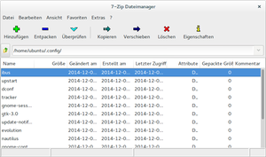

7z
Dieser Artikel wurde für die folgenden Ubuntu-Versionen getestet:
Ubuntu 17.10 Artful Aardvark
Ubuntu 16.04 Xenial Xerus
Ubuntu 14.04 Trusty Tahr
Zum Verständnis dieses Artikels sind folgende Seiten hilfreich:
7z  ist sowohl ein Dateiformat als auch ein Kommandozeilenprogramm zur Datenkompression. Auf Wunsch kann man auch eine eigene grafische Oberfläche installieren. Es handelt sich um die Referenzimplementierung des hocheffizienten, freien LZMA-Algorithmus, der die allermeisten anderen Algorithmen in ihrer Kompressionsstärke mitunter deutlich übertrifft (Vergleich ).
ist sowohl ein Dateiformat als auch ein Kommandozeilenprogramm zur Datenkompression. Auf Wunsch kann man auch eine eigene grafische Oberfläche installieren. Es handelt sich um die Referenzimplementierung des hocheffizienten, freien LZMA-Algorithmus, der die allermeisten anderen Algorithmen in ihrer Kompressionsstärke mitunter deutlich übertrifft (Vergleich ).
{kind=link}
Ein Beispiel: LZMA komprimiert durchschnittlich 50% stärker als der Deflate-Algorithmus des weit verbreiteten ZIP-Formats. Auch mit proprietären, kommerziellen Formaten wie RAR kann sich 7z messen. Sensible Daten können per AES-256 verschlüsselt werden und ein Archiv kann bei Bedarf in beliebig große Teile zerlegt werden.
Dank seiner Open-Source-Entwicklung hat 7z mittlerweile große Verbreitung gefunden. Die Standard-Archivmanager File Roller, Xarchiver und Ark (KDE) kommen mit dem Format zurecht, indem sie auf das hier beschriebene Kommandozeilenprogramm zurückgreifen. Für andere Betriebssysteme gibt es eine breite Palette an Programmen, die 7z von Haus aus unterstützen. Eine Auflistung findet sich auf der Homepage .
Hinweis:
Der LZMA-Algorithmus stellt beim Komprimieren sehr hohe Ansprüche an die Systemleistung, insbesondere an den Arbeitsspeicher. Leistungsschwache Systeme werden spätestens bei großen Datenmengen und höheren Kompressionsstufen völlig in die Knie gehen ("System Lock-up"). Um das Potential voll auszuschöpfen, sollten mindestens 2 GiB Arbeitsspeicher vorhanden sein und auch der Prozessor sollte eine Gesamtleistung von 2 GHz nicht unterschreiten.
Installation¶
Der Linux-Port von 7z heißt p7zip. Es finden sich zwei Varianten in den Paketquellen [1]:
p7zip (universe, unterstützt nur 7z und LZMA)
p7zip-full (universe, unterstützt noch weitere Formate und Algorithmen)
p7zip-rar (multiverse, unfreies Modul für p7zip-full, um auch RAR-Archive entpacken zu können)
 mit apturl
mit apturl
Paketliste zum Kopieren:
sudo apt-get install p7zip p7zip-full p7zip-rar
sudo aptitude install p7zip p7zip-full p7zip-rar
Nach der Installation[1] wird p7zip mit 7zr aufgerufen, p7zip-full dagegen nur mit 7z [2]. Im Verlaufe dieses Artikels wird von p7zip-full ausgegangen, der Befehl ist bei Bedarf auszutauschen.
Verwendung¶
Kommandozeile¶
Die allgemeine Syntax von p7zip-full lautet:
7z OPTIONEN SCHALTER AUSGABE EINGABE
Ein Beispiel:
7z a -t7z -m0=LZMA -mmt=on -mx=9 -md=96m -mfb=256 /home/peter/kirschkuchenrezept.7z /home/peter/kirschkuchenrezept.doc
7z erkennt Verzeichnisse selbst und arbeitet rekursiv, es muss kein spezieller Parameter angegeben werden. Optionen werden immer als Buchstaben am Anfang angegeben, während die darauf folgenden Schalter immer ein vorstehendes - haben.
Optionen¶
Mit den Optionen wird zuerst grob festgelegt, was zu tun ist.
| Optionen | |
| Option | Beschreibung |
a | Dateien/Verzeichnisse einem Archiv hinzufügen bzw. eine Archivdatei erstellen |
b | Benchmark des Systems |
d | Dateien/Verzeichnisse aus einem Archiv löschen |
e | Einfaches Entpacken aller Dateien aus dem Archiv |
l | Inhalt eines Archivs auflisten |
t | Archiv auf Beschädigungen prüfen |
u | Archivinhalt aktualisieren |
x | Archiv entpacken und dabei die Verzeichnisstruktur erhalten |
Schalter¶
Im folgenden nur ein Auszug der wichtigsten Schalter, welche die genaue Vorgehensweise festlegen. Der Fokus liegt hier auf dem LZMA-Algorithmus. Informationen zu weiteren Schaltern finden sich in den Manpages.
| Schalter | |
| Schalter | Beschreibung |
-l | keine Symlinks archivieren, sondern ihr Ziel |
-m | Algorithmus für Kompression festlegen (z.B. -m0=LZMA) |
-mhe=on | Die Kopfdaten des Archivs verschlüsseln |
-oZIEL | Nicht ins gleiche Verzeichnis entpacken (Standard), sondern nach "ZIEL" |
-pPASSWORT | Archiv mit Passwort schützen |
-t7z | Dateiformat festlegen (hier 7z) Weitere Formate: xz, bzip2, gzip, tar, zip und wim |
-mmt=on | Multithreading für Mehrkernprozessoren oder Multiprozessorsysteme aktivieren (manuelle Festgelegung der zu nutzenden Kerne mit -mmt=X) |
-mx=0 | Stufe der Kompressionsstärke (hier 0) (0=Speichern, 1=schnell und schlecht, 9=langsam und gut) |
-mfb=64 | Anzahl der Wörterbücher (hier 64) (8, 12, 16, 24, 32, 48, 64, 96, 128, 192, 256, 273) |
-md=64m | Größe der Wörterbücher (hier 64 MiB) (64k, 1m, 2m, 4m, 6m, 8m, 12m, 16m, 24m, 32m, 48m, 64m, 96m, 128m) |
-ms=on | Progressive ("solid") Kompression |
-v128m | Das Archiv wird in mehrere Teile (Volumes) aufgeteilt (hier 128 MiB). Größenangaben werden mit einer Einheit angegeben: b=Byte, k=Kilobyte, m=Megabyte, g=Gigabyte. Es können verschiedene Dateigrößen erstellt werden: 7z a datei.7z -v10k -v15k -v2m. Das erste Volumen erhält 10 KiB, das Zweite erhält 15 KiB, und alle anderen erhalten 2 MiB. |

Grafische Oberfläche¶
Eine Alternative zu den Oberflächen der Archivmanager ist die eigene Oberfläche des p7zip-Projekts, die nur im Quellcode enthalten ist. Da das Kompilieren aufgrund von ungelösten Abhängigkeiten problematisch ist (siehe hier), kann die Oberfläche über Fremdpakete 
 nachinstalliert werden. Nach dem Herunterladen müssen DEB-Pakete noch manuell installiert werden [3].
nachinstalliert werden. Nach dem Herunterladen müssen DEB-Pakete noch manuell installiert werden [3].
Achtung: Diese Pakete sind nur bis Ubuntu 14.04 verwendbar.
Bei Ubuntu-Varianten mit einem Anwendungsmenü ist das Programm anschließend über "Zubehör -> 7-Zip FM" zu finden. Ansonsten erfolgt der Programmstart [4] über die Befehle 7zFM oder 7zG. Unter KDE wird bei Dolphin und Konqueror zusätzlich ein Servicemenü hinzugefügt, um über die rechte Maustaste  komprimieren bzw. entpacken zu können.
komprimieren bzw. entpacken zu können.
Hinweis!
Fremdpakete können das System gefährden.
Anmerkung: Nach dem Herunterladen eines Pakets sollte man die Prüfsumme mit md5sum ermitteln und mit der offiziellen Prüfsumme abgleichen, um eine Manipulation durch Dritte auszuschließen.
Tipps¶
Je höher die anstehenden Nummern bei den Schaltern
-mfbund-mdsind, desto stärker ist die Kompression. Dies wirkt sich allerdings nicht nur auf die benötigte Zeit des Vorgangs aus, sondern auch auf die Systemauslastung, insbesondere die des Arbeitsspeichers. Der Schalter-mdlegt nicht etwa die maximale Beanspruchung des Arbeitsspeichers fest.
Die progressive Komprimierung wird die Effizienz immer dann erhöhen, wenn mehrere Dateien gepackt werden sollen – insbesondere, wenn diese sich ähneln. Der nötige Aufwand kann durch die Methode jedoch stark in die Höhe schießen, sie sollte mit Bedacht eingesetzt werden. Ist ein Archiv progressiv komprimiert worden, können einzelne Dateien bzw. Verzeichnisse nur entpackt werden, indem alles, was sich im Archiv davor befindet, abgearbeitet wird. In einem solchem Szenario dauert das Entpacken länger. Beim Entpacken des gesamten Archivs gibt es hingegen keinen sonderlichen Zeitunterschied.
7z alleine ist für ein Backup eines kompletten Linux-/Unix-Systems nicht geeignet, da es sämtliche Zugriffsrechte ignoriert. Um doch ein Backup eines Linux-/Unix-Systems mit 7z zu komprimieren, empfiehlt es sich, dieses vorher mit tar zu einem einzelnen Datenstrom zusammenzufügen. Beispiel:
tar cf - PFAD | 7za a -si ERGEBNIS.tar.7z
Das Entpacken eines solchen Archives läuft dann wieder in umgekehrter Reihenfolge ab (Achtung: Das Zielverzeichnis ZIELPFAD muss vorhanden sein!):
7za x -so ERGEBNIS.tar.7z | tar xf - -C ZIELPFAD --numeric-owner
Links¶
7z - Wikipedia
Benutzeroberfläche für p7zip - Forendiskussion
Packprogramme
 Übersichtsartikel zu Archivierungs- und Komprimierungs-Programmen
Übersichtsartikel zu Archivierungs- und Komprimierungs-Programmen
- Erstellt mit Inyoka
-
 2004 – 2017 ubuntuusers.de • Einige Rechte vorbehalten
2004 – 2017 ubuntuusers.de • Einige Rechte vorbehalten
Lizenz • Kontakt • Datenschutz • Impressum • Serverstatus -
Serverhousing gespendet von